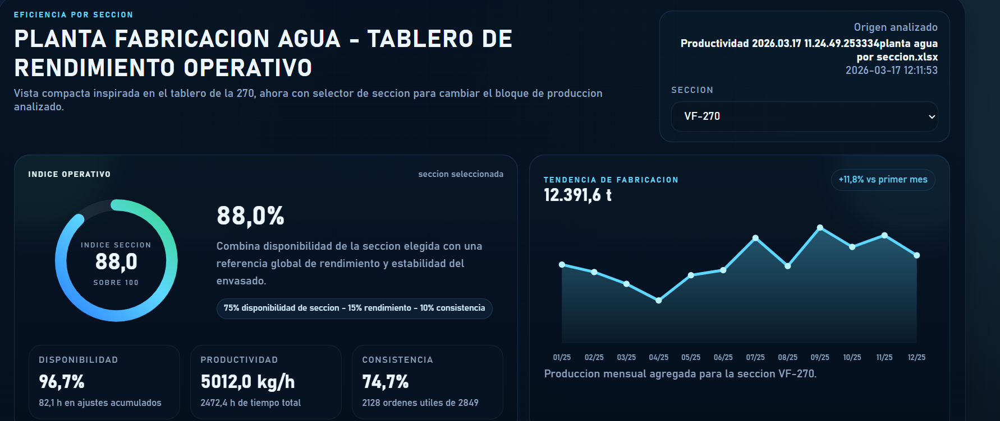
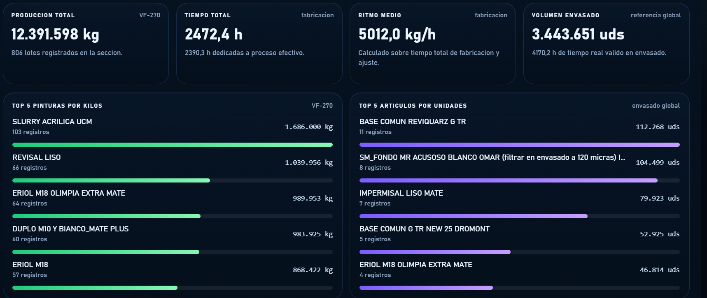
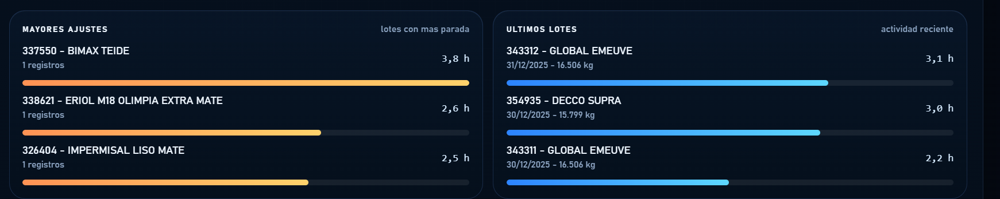

Cálculo del OEE =Disponibilidad×Rendimiento×Calidad
He desarrollado un dashboard web a partir de los datos de productividad de cada planta de fabricación. Las imágenes mostradas corresponden a la planta de agua, sección VF270, año 2025 completo
Para construirlo, el primer paso fue diseñar un proceso de lectura del archivo Excel procedente del ERP, extrayendo la información de sus dos hojas principales: producción y envasado. Este proceso transforma los datos en un archivo intermedio en JavaScript (dashboard-data.js), donde la información queda estructurada y preparada para su visualización.

A partir de estos datos, desarrollé la interfaz del dashboard en dashboard.js y su estilo visual en dashboard.css. El objetivo fue replicar una estética similar a la de un sistema MES (como el que se está evaluando de MAPEX), pero adaptada a nuestras necesidades actuales y a la estructura real de nuestras secciones productivas.
El resultado es un panel compacto que incluye:
Un bloque principal de rendimiento
- Indicadores resumidos
- Evolución mensual
- Rankings de productos/pinturas
- Actividad reciente
- Tabla detallada de lotes
- La principal mejora, o avance, es la posibilidad de visualizar todas las plantas en un único dashboard, incorporando un desplegable para seleccionar la máquina o línea (por ejemplo: VF-270, VF-75, VF-50, DLD8000-1, DLD8000-2, Pasta, etc.).
Al cambiar la selección, el contenido se recalcula automáticamente, permitiendo analizar cada sección de forma dinámica en tiempo



A nivel funcional, el dashboard calcula métricas clave como:
Kilos fabricados
Tiempo total
Disponibilidad
Productividad (kg/h)
Ajustes acumulados
Evolución mensual
Además, incluye filtros por mes y búsqueda por lote o pintura, lo que lo convierte no solo en un panel visual, sino también en una herramienta de análisis operativo.
- En resumen, se ha transformado un Excel de productividad en un dashboard interactivo, visual y reutilizable, diseñado para consultar el rendimiento de cualquier sección de la planta desde una única pantalla.
- Punto crítico: el dato
- Para calcular correctamente el OEE de una línea de fabricación, el elemento fundamental es la calidad del dato.
Actualmente, este es nuestro principal reto: los datos no siempre existen, no se capturan o no son fiables. Por ello, estamos trabajando en mejorar su obtención y estructuración.
- Los datos necesarios se agrupan en tres pilares:
- 1. Disponibilidad
- Permite conocer cuánto tiempo la línea estuvo realmente produciendo frente al tiempo planificado.
- Es necesario capturar:
- Tiempo planificado de producción (turnos, descansos excluidos)
Paradas planificadas (según criterio de inclusión en OEE)
Paradas no planificadas:
Averías
- Esperas por material
- Falta de operario
- Limpiezas no planificadas
- Cambios largos no previstos
- 2. Rendimiento
- Mide si la línea ha trabajado a la velocidad esperada.
- Se requiere:
- Producción total (litros, kg, envases, lotes)
- Velocidad o ciclo ideal (envases/min, litros/h, etc.)
Tiempo operativo real
En nuestro caso, este punto es especialmente complejo, ya que una misma línea trabaja con:
Diferentes formatos
- Distintas viscosidades
- Colores variados
- Tiempos de mezcla y cambios de producto
- Por ello, es necesario definir una velocidad ideal por formato o familia de producto, basada en datos históricos (máximo un año) y debidamente ponderada.
- 3. Calidad
- Evalúa qué parte de la producción es válida a la primera.
- Se necesita medir:
- Producción buena
- Producción total
- Mermas, rechazos o retrabajos:
Fuera de especificación
Errores de color